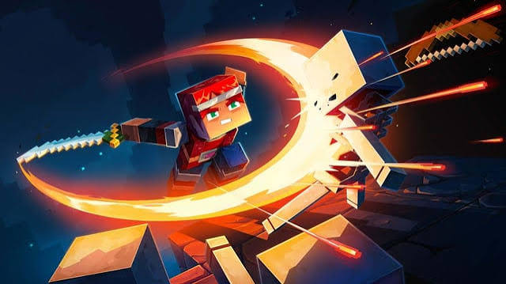
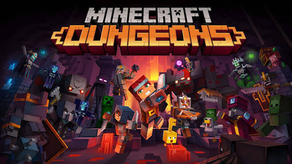

Minecraft Dungeons é um jogo de ação e aventura no estilo dungeon crawler (exploração de masmorras) desenvolvido pela Mojang Studios e Double Eleven, e publicado pela Xbox Game Studios. Diferente do Minecraft tradicional, ele não é focado em mineração ou construção de blocos, mas sim em combate, exploração de fases e coleta de itens e o Minecraft Dungeons II é a sequência do jogo de RPG de ação (ARPG) no estilo dungeon crawler desenvolvido pela Mojang Studios em colaboração com a Double Eleven.
Diferente do Minecraft normal os Dungeons são jogos de RPG (Role-Playing Game, ou jogo de interpretação de papéis) colocam você no controle de um personagem em uma história interativa, onde suas escolhas, combates e evolução de atributos moldam a jornada e toda a tematica gira em torno do Minecraft como uma "Inspiração"

O objetivo principal de Minecraft Dungeons é atravessar as fases, derrotar hordas de monstros, coletar equipamentos melhores e, no enredo central, derrotar o Arqu-Illager (que foi corrompido pelo Orbe da Dominância) para salvar os aldeões e restaurar a paz. Derrotar o Arch-Illager (Arquidesempenho/Arquialdeão): A trama central segue um aldeão desprezado que encontra o poderoso Orbe da Dominância, corrompe o poder e começa a oprimir os outros aldeões. Sua missão é atravessar as fases, acabar com os exércitos dele e restaurar a paz. E nos dungeons 2 é Investigar as Fendas Misteriosas O enredo principal foca em fendas estranhas que surgem pelo terreno, espalhando uma substância chamada Scook e alterando o ambiente e os inimigos Enfrentar a Nova Ameaça e o Conselho Superior dos Laguias Lutar contra inimigos corrompidos por almas (como um creeper corrompido por almas) e descobrir a verdade por trás da energia das fendas Explorar a Nova Dimensão (Sift / The Sift): Ajudar no combate em cenários desconhecidos e dimensões paralelas com ameaças próprias.